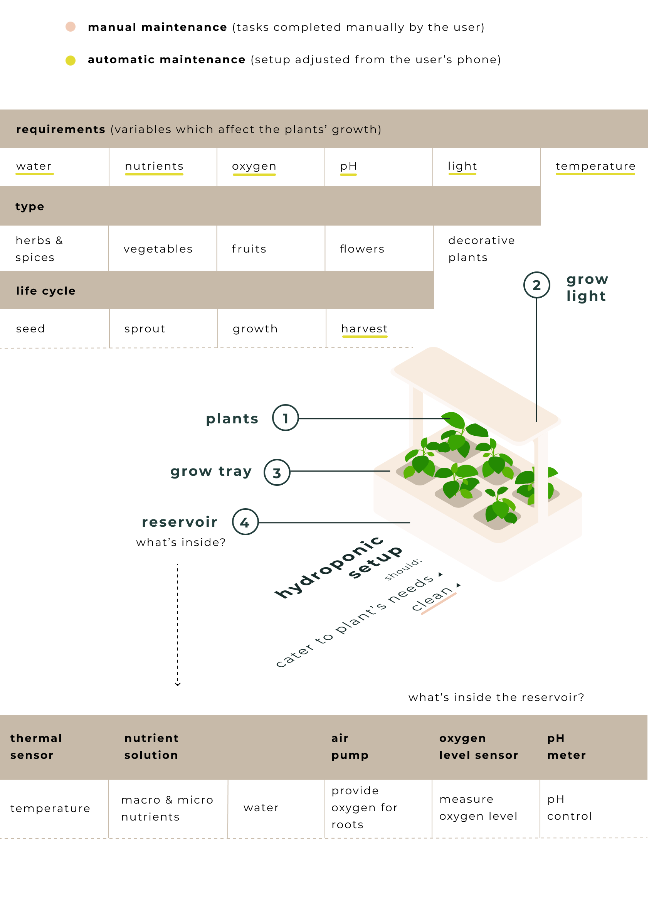
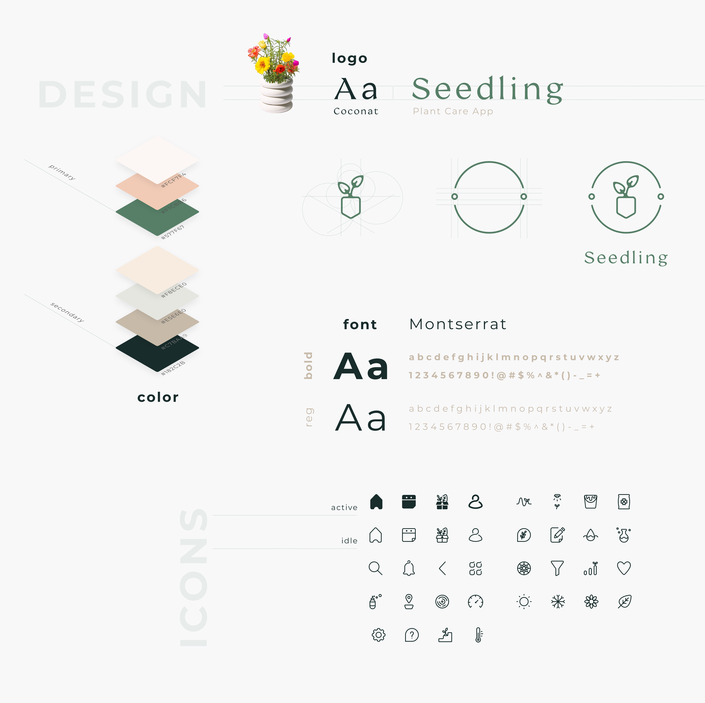
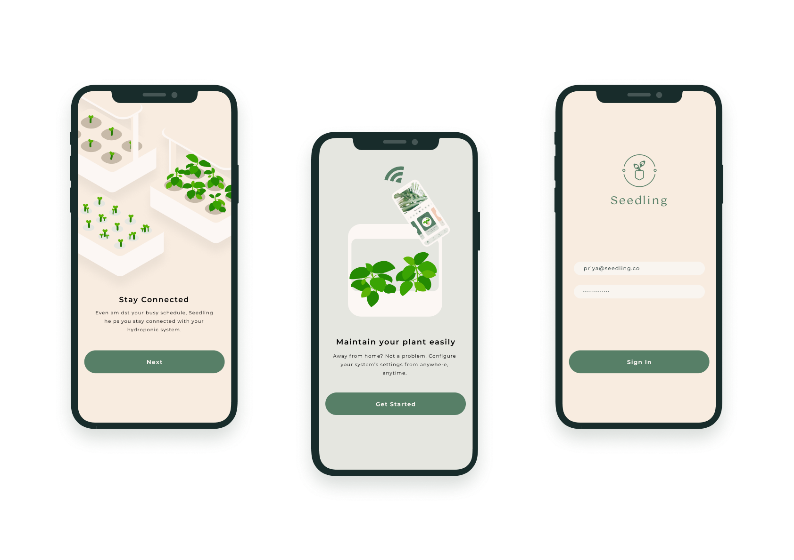
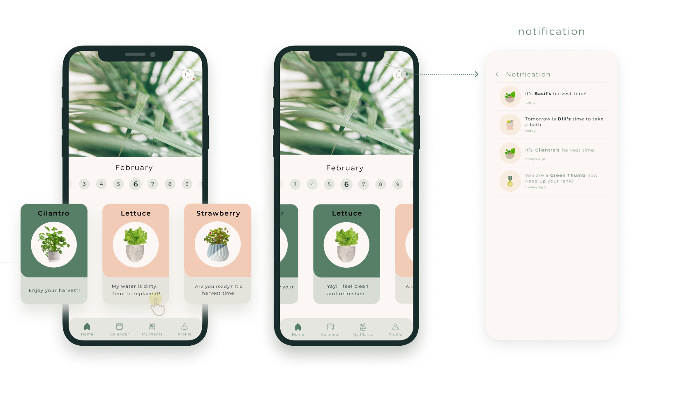
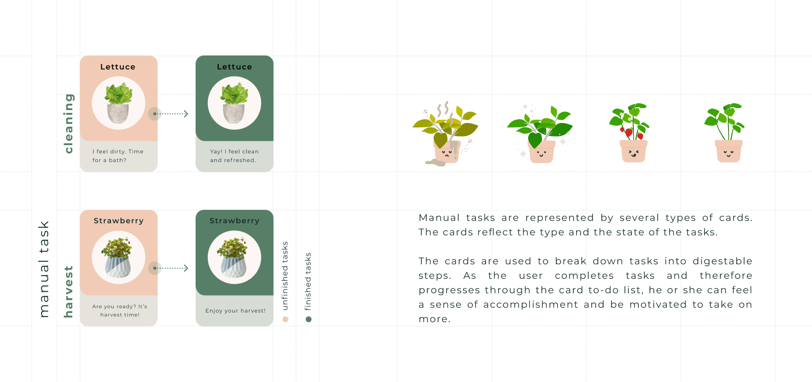
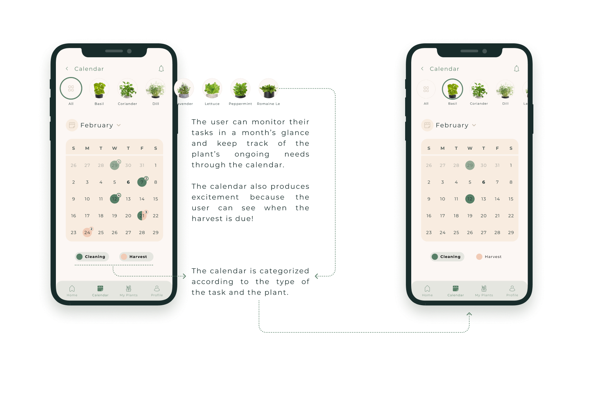
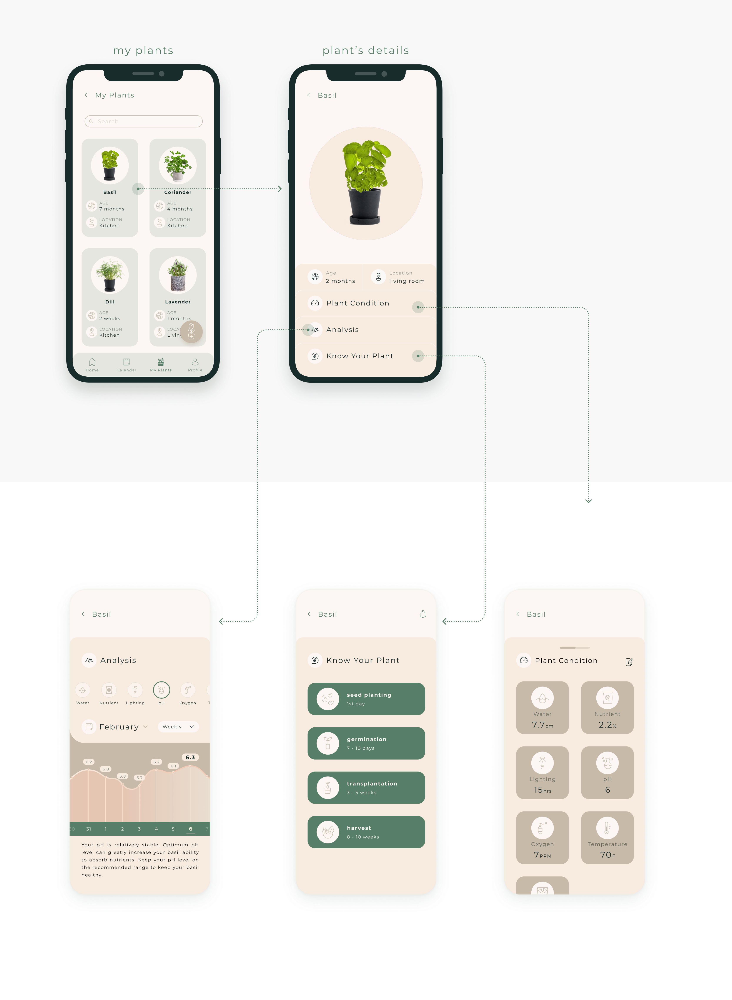
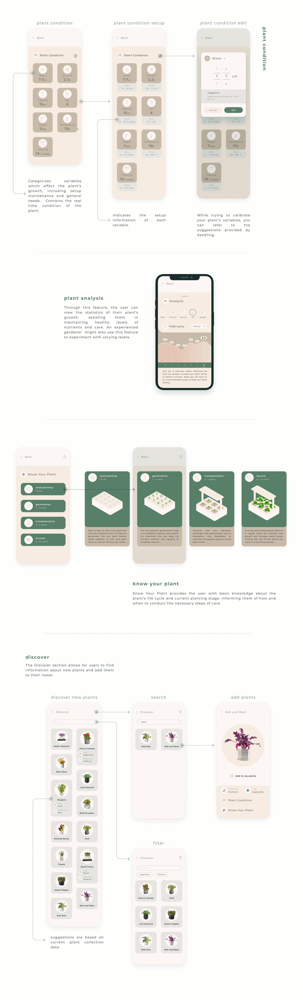
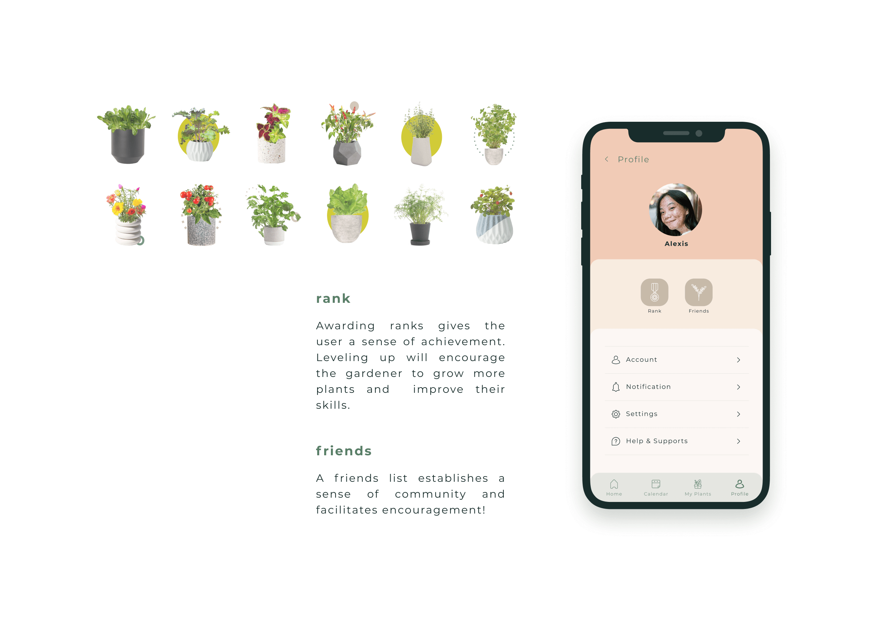

Design Direction
Based on the user flow, I began to broadly translate steps of action into low-fidelity wireframes. I prioritized seamless transitions and intuitive interactive behaviors.


Produce farming can be expensive, environmentally damaging, and unpredictable. Hydroponic gardening systems present a solution, as plants are placed in a soilless growing medium and nutrients are provided directly to the roots. Where issues of limited gardening space and food security abound, hydroponic systems can be a game-changer for someone looking for a more sustainable source of fresh produce.
I created Seedling to act as a companion iOS mobile app to help any user keep track of their plants' progress and educate them on how to care for a hydroponic system effectively for maximum yield.
Hydroponic gardening has the potential to produce affordable, sustainable, and environmentally friendly vegetation. However, such a system must also suit any gardener's needs, regardless of skill level, experience, or objective. From the casual hobbyist to the inner-city planter, I wanted to be able to accommodate any kind of user. The infographic below sums up the findings of my initial research. I discovered that
To guide design decisions and build empathy in considering potential users’ situations, I created two primary personas, Priya and Scott. The conception of these personas helped me identify behavioral variables to categorize different types of users and their unique needs, desires, and contexts of use. These variables ranged from motivations like feeding a family affordably to skills like gardening experience to contexts like living environment.
After curating these variables, I put together a user journey map, depicting the thoughts, feelings, behaviors, pain-points, and goals a user might have or experience. I found that although a user’s environment or level of expertise may vary, there was commonality shared through the overall gardening experience. This allowed me to address the problems through synthesized solutions from both functional and emotional perspectives.
With the solutions laid out, I mapped out a user flow that would tackle each pain-point and take each behavior model into consideration. The most difficult transition was between beginning to plant and distributing individual tasks. Ultimately, I went with a flow that allowed users to manage incoming tasks in accordance to how they adjusted their initial system setup.
Based on the user flow, I began to broadly translate steps of action into low-fidelity wireframes. I prioritized seamless transitions and intuitive interactive behaviors.
Creating a wireflow connected each screen and ensured that the user could navigate the interface fluidly.
For Seedling’s interface design, I opted for contrasting primary and secondary colors, to allow for high contrast and legibility so any user could navigate it confidently. I also wanted to create an organic, warm interface that users would want to return to time and again. Each design decision was intentionally executed to evoke positive connections to the earth and gardening.
A clean and uncluttered onboarding process guides the user through a brief summary of Seedling’s advantages, building excitement during the sign-up stage.
The home page centers around an automated daily calendar system, so users are not burdened with the role of scheduling their tasks by themselves. Engagement is heightened by clear organization through daily task cards and direct notifications to the user’s phone.
 Beyond just a daily outlook, users can also monitor their tasks at a month’s glance and keep track of their garden’s ongoing needs through the calendar. My research stage revealed that a common problem dealt with inconsistency in caring for plants. A calendar resolves this issue while also producing excitement through harvest predictions.
One of the biggest challenges I faced during the prototyping stage was coming up with a way to educate the user on their individual plants without overwhelming them with a barrage of information. After several iterations, I implemented an inventory called My Plants, where users could read into details of recommended levels of care and their plants’ current conditions based on a card system similar to that of the home page.
The user can access information about their plants through four primary features: Plant Condition, Plant Analysis, Know Your Plant, and Discover, all of which are detailed below. The application draws both from a database for static information as well as the hydroponic system’s reservoir (i.e. thermal sensors, air pumps, etc.) for active condition readings.
Gardening can often seem like a solitary activity. For those who want community or rewards for their efforts, the user profile provides both through a ranking system and a means by which they can connect with like-minded gardeners.
1. Simplicity is best when displaying information. I found that balancing aesthetics and functionality was difficult when trying to design a system for conveying detailed plant information. I had to prioritize simplicity and move each of the four features of the My Plants section to their own tab, instead of cramming them into one long page. Although this called for additional navigation, the payoff of a comfortable viewing experience was well worth it!
2. There is always commonality between levels of experience. Hydroponic gardening, with all of its vast benefits, can seem intimidating to a beginner planter. At the same time, I wanted to cater to the needs of expert gardeners as well. As a result, I had to consider and create a user flow that worked for both ends of the spectrum, seeking out common ground shared between gardeners of all contexts and knowledge.
3. Further improvements. With extra time, I would further develop the social aspect of the app, allowing users to contact others to exchange the fruits of their labor (literally!) and ask questions to the community. I would also integrate a system to show how much water, land, money, and other resources approximately saved through every hydroponic harvest, to show the user how significant of a difference they are making.